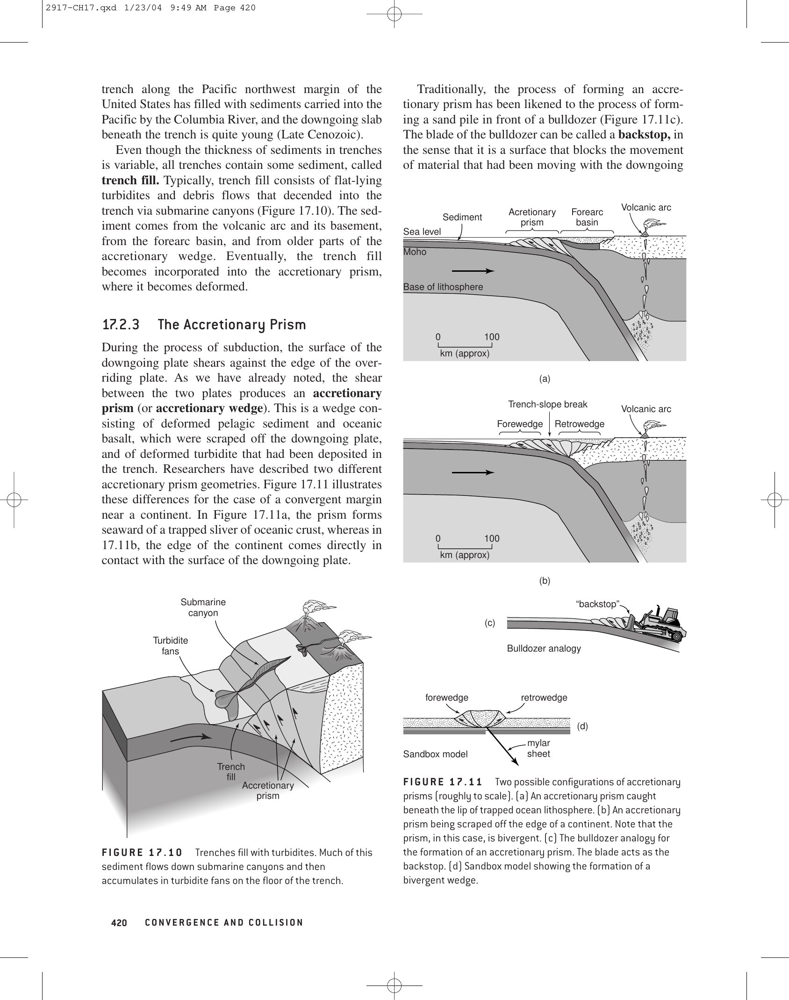

Continental margins represent the transitional boundary zones connecting thick continental crust with thin oceanic crust. Based on their relationship to tectonic plate boundaries, global continental margins are fundamentally categorized into Active Margins and Passive Margins.
Where $t$ is post-rift age, $\tau \approx 62.8\text{ Ma}$ is the thermal decay constant of the lithosphere, $\rho_m$ is mantle density, and $\rho_w$ is water density. The massive accommodation space traps major petroleum reservoirs.

| Diagnostic Feature | Passive Margin (Atlantic-Type) | Active Margin (Pacific-Type) |
|---|---|---|
| Tectonic Status | Intraplate (Not a plate boundary) | Convergent plate boundary (Subduction zone) |
| Continental Shelf | Broad and wide ($100 - 300+\text{ km}$) | Narrow or absent ($10 - 30\text{ km}$) |
| Deep-Sea Trench | Absent (Replaced by Continental Rise) | Present (Deep oceanic trench, $>6000-11000\text{ m}$) |
| Volcanic Activity | None (Aseismic / Non-volcanic) | Vigorous (Andesitic volcanic arc / island arc) |
| Earthquake Seismicity | Very low to negligible; shallow intraplate | Intense, deep Wadati-Benioff zone megathrusts |
| Global Example | Eastern North America, Brazil, West Africa, East Coast of India | Western South America (Andes), Cascadia, Japan |
| Wilson Cycle Stage | Tectonic Regime | Margin Configuration | Global Modern Prototype |
|---|---|---|---|
| 1. Embryonic Rift | Continental crustal extension | Rift valleys, grabens, alkaline volcanism | East African Rift System |
| 2. Juvenile Ocean | Early seafloor spreading | Narrow ocean basin, evaporites, early shelves | Red Sea, Gulf of California |
| 3. Mature Ocean | Broad seafloor spreading | Wide passive continental margins with shelf/slope/rise | Atlantic Ocean (North America & Africa) |
| 4. Declining Ocean | Subduction initiation | Active continental margins, trenches, volcanic arcs | Pacific Ocean basin |
| 5. Terminal Collision | Continental collision | Suture zones, fold-and-thrust mountain belts | Himalayas (Indo-Eurasian collision) |